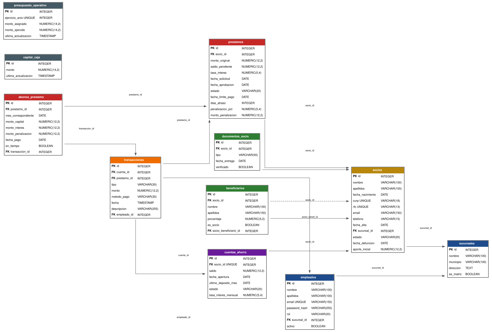

La Caja Popular es una institución financiera comunitaria que administra el ahorro y otorga préstamos a sus socios afiliados.
El sistema implementa:

1_Crear_Base_Datos.txt
postgres.DROP y CREATE DATABASE.2_Estructura_y_Datos.txt
CREATE OR REPLACE FUNCTION check_socio_reglas()
RETURNS TRIGGER AS $$
BEGIN
IF NEW.fecha_nacimiento >
CURRENT_DATE - INTERVAL '19 years' THEN
RAISE EXCEPTION
'El socio debe tener 19 anios o mas cumplidos';
END IF;
RETURN NEW;
END; $$ LANGUAGE plpgsql;
CREATE TRIGGER trg_socio_reglas
BEFORE INSERT OR UPDATE ON socios
FOR EACH ROW EXECUTE FUNCTION check_socio_reglas();Trigger trg_socio_reglas valida antes de cada INSERT o UPDATE en la tabla socios.
ALTER TABLE transacciones ADD CONSTRAINT
chk_transaccion_metodo CHECK (metodo_pago IN (
'SPEI',
'EFECTIVO',
'DEBITO_VISA',
'DEBITO_MASTERCARD',
'DEBITO_CARNET',
'CREDITO_VISA',
'CREDITO_MASTERCARD',
'CREDITO_CARNET'
));El CHECK sólo lista los métodos permitidos. AMEX no aparece, por lo que cualquier transacción con ese valor es rechazada.
| Hueco detectado | Cómo quedó blindado |
|---|---|
| Sobregiro (retirar más que el saldo) | Trigger valida fondos antes del retiro |
Saldo editable a mano (UPDATE saldo) | Trigger proteger_saldo: solo vía transacciones |
Préstamo escalable por UPDATE | El trigger cubre INSERT y UPDATE |
| Transacción cruzada entre socios | Cuenta y préstamo deben ser del mismo socio |
| Tope de depósito evadible | Rango $100–$10,000 a todo crédito |
| Formato débil de CURP / RFC / email | CHECK con expresión regular |
Además: vistas para consulta segura, roles
(caja sin privilegios de admin, consulta solo lectura) y
REVOKE ALL ON SCHEMA public — nadie tiene más permisos de los necesarios.
password_hash son de ejemplo; en producción irían con bcrypt/argon2 + salt.bind 127.0.0.1 + firewall), backups cifrados y bitácora de auditoría.No existe un traductor automático fiable para este caso: herramientas como
pgloader migran tablas y datos pero descartan
funciones, triggers, CHECK con regex y roles — justo el corazón del proyecto.
La traducción se hizo a mano y se verificó en vivo en cada motor.
Resultado idéntico en los tres:
| Elemento | PostgreSQL | MariaDB | Oracle |
|---|---|---|---|
| Autoincremento | GENERATED…IDENTITY | AUTO_INCREMENT | GENERATED…IDENTITY |
| Booleano | BOOLEAN | BOOLEAN | NUMBER(1)+CHECK |
| Texto largo | TEXT | TEXT | CLOB |
| CHECK con regex | col ~ 'patrón' | col REGEXP '…' | REGEXP_LIKE(…) |
| Lanzar error | RAISE EXCEPTION | SIGNAL '45000' | RAISE_APPLICATION_ERROR |
| Variable candado | set_config | @caja_ledger | pkg_caja.g_ledger |
| Tabla mutante | permitido | permitido | COMPOUND TRIGGER |
| INSERT multifila | VALUES(),() | VALUES(),() | 1 INSERT por fila |
Los dos retos exclusivos de Oracle: la tabla mutante
(un trigger no puede leer su propia tabla → se resolvió con COMPOUND TRIGGER) y que
INSERT ALL repetía el id autogenerado.
El más potente y gratuito.
El más simple y ligero.
El más robusto y empresarial.
Veredicto para la Caja Popular: siendo una institución financiera comunitaria, PostgreSQL ofrece el mejor equilibrio (potencia de reglas + costo cero). MariaDB es ideal si se prioriza simplicidad y despliegue web económico. Oracle se justificaría solo si creciera a escala de banco grande con presupuesto y soporte empresarial. Lo importante: la base es portable a los tres.
BD_Jesdreel_Daniel_Mata_Gomez — PostgreSQL 18.4.Gracias por su atención